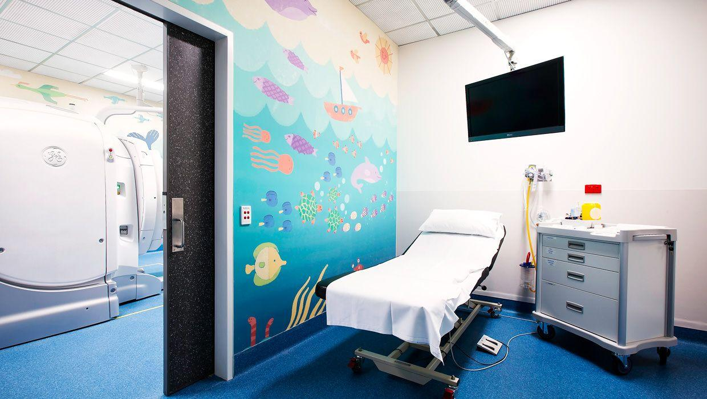

Emergency & Trauma
Open 24 hours a day for acute injury, chest pain, stroke, and critical care.
City Hospital has treated the city since 1958. Our trauma center runs around the clock, backed by 340 beds and specialists across eight departments.
Figures are illustrative and shown for demonstration purposes only. Call ahead for current wait times.
View full hospital status →Open 24 hours a day for acute injury, chest pain, stroke, and critical care.
Diagnosis and treatment of heart conditions, including interventional procedures.
Labor, delivery, and newborn care, with a dedicated neonatal intensive care unit.
Primary and specialist care for infants, children, and adolescents.
Cancer screening, treatment planning, and ongoing infusion services.
Joint reconstruction, fracture care, and rehabilitation for sports injuries.
X-ray, CT, MRI, and ultrasound imaging read by on-site radiologists.
Bloodwork, diagnostic testing, and pathology services for every department.


A public trauma center built for the whole city, not just the neighborhoods that can reach it easily.
Eighteen years treating trauma and acute care patients at City Hospital.
Specializes in interventional procedures and heart failure management.
Leads the hospital's neonatal intensive care unit.
Focuses on joint reconstruction and sports injury recovery.
| General Wards | 11:00 AM – 8:00 PM |
|---|---|
| Maternity Ward | 10:00 AM – 6:00 PM · partners may stay overnight |
| Intensive Care Unit | 1:00–3:00 PM and 6:00–8:00 PM · two visitors at a time |
| Emergency Department | Open 24 hours · access depends on treatment area |
| Pediatrics | 10:00 AM – 8:00 PM · one guardian may stay overnight |
Bring your insurance card and a photo ID to registration. Billing staff are available on the ground floor.
MyCityHospital lets patients view test results and message their care team online.
Visitor parking is on Meridian Parkway. Follow signs from the main entrance to the parking structure.
Interpreters are available on request at registration for any department.
Flu vaccination clinic open in the East Wing lobby through October.
Blood donation drive at the Meridian Parkway entrance, first Saturday of every month.
Visitor screening is in place at all entrances during peak respiratory season.
Find us on Meridian Parkway, or start a visit request below.
Main line: 555-0142
Appointments: 555-0199
Emergency admitting: 555-0173